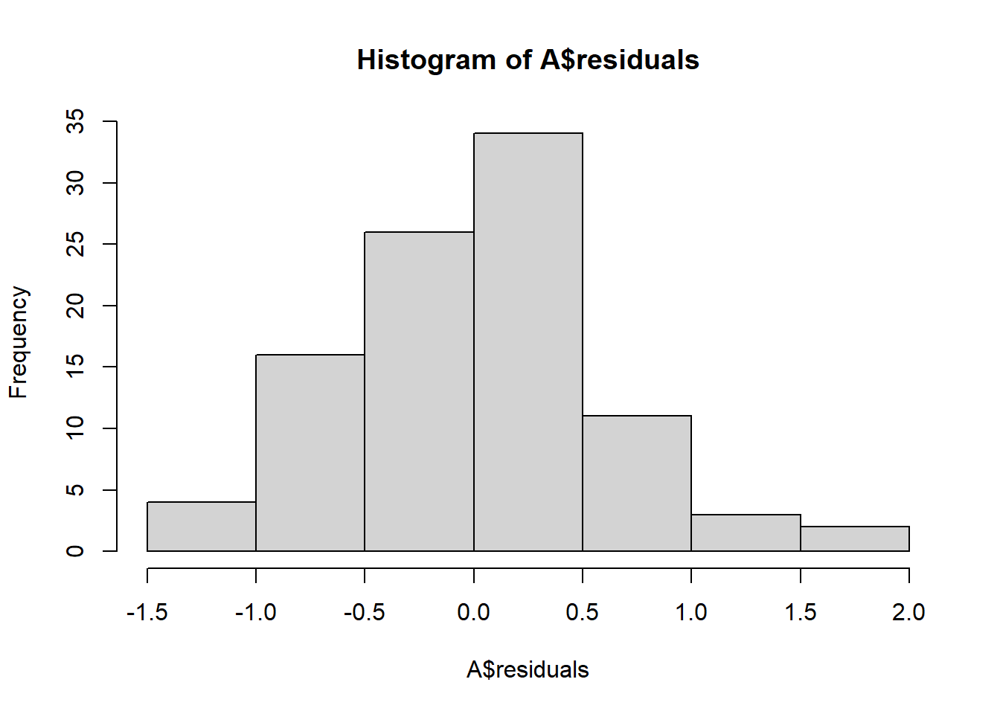
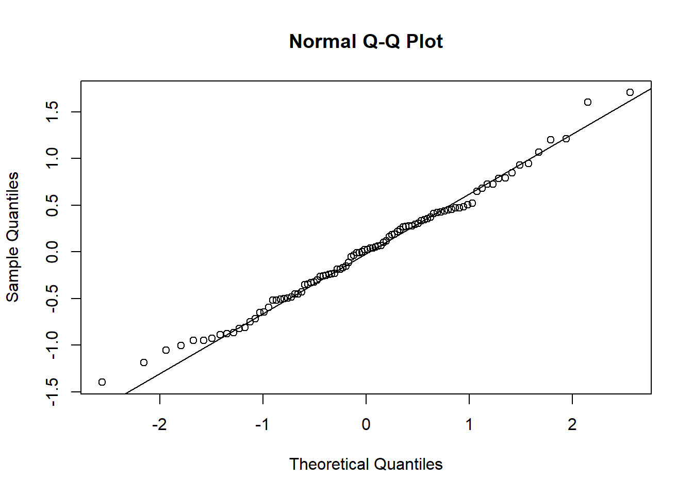

Chapter 15 ANOVA
One of the most important experiments we've discussed in the course involves the comparison of two populations in terms of their means. This kind of comparison motivated our study of the two-sample t-test and CI for the difference of two population means. These are very useful statistical methods, but why stop at comparing two populations? Often, we would like to compare three or more populations. For example, suppose a company marketing laundry detergent wants to compare 4 product designs (the detergent container and its labeling) in a pilot study. Using t-tests or CIs we could make pairwise comparisons (there are 4 choose 2, or, 6 pf these) but this causes some issues. Specifically, suppose there are no difference in the product designs and suppose we conduct 6 pairwise \(t\) tests at \(\alpha = 0.05\). If the 6 tests are independent (the test statistics are mutually independen r.v.'s) then the chance we make at least 1 Type 1 error is \(1-0.95^6 = 0.265\)! Even if there are no deifferences, there's a good chance we'll find at least one difference by chance alone. In order to avoid the Type 1 error inflation caused by multiple testing one strategy---called Bonferroni correction---requires that we conduct each test at level \(\alpha / 6 = 0.00833\) so that the family-wise Type 1 error rate is no more than \(1-(1-0.00833)^6 = 0.041 \leq 0.05\). This fixes our Type 1 error inflation problem, but it also means our power to detect fale null hypotheses (detect differences in response for different product designs) is severely hampered. Can we do better? Fortunately, the answer is yes! The alternative, improved strategy for comparing multiple population means is called ANOVA (analysis of variance) and its the focus of this section.
15.1 Analysis of variance
The general setup is as follows: we conduct an experiment in which we observe a random sample of size \(n\) from each of \(J\) populations so that the total sample size is \(N=nJ\). Dentoe the samples by \(X_{ij}\) for individual \(i=1, \ldots, n\) in the sample from population \(j=1,\ldots, J\). (It's possible, of course, to consider random samples of different sizes, but for simplicity we consider only the balanced case). Our goal in this experiemnt is to evaluate the null hypothesis \(H_0: \mu_j = \mu\) for all \(\j = 1,\ldots, J\), meaning that all the populations have the same mean. Further, we assume populations are normal with equal variance; this means that the populations are, essentially, equivalent under \(H_0\). The alternative hypothesis is that at least one population mean differs from the others.
Rather than comparing sample means to evaluate \(H_0\) we (somewhat counterintuitively) compare two estimators of the population variance. Consider the following decomposition:
\[\sum_{i=1}^n\sum_{j=1}^J(X_{ij} - \overline X)^2 = \sum_{i=1}^n\sum_{j=1}^J (X_{ij} - \overline X_j)^2 + n\sum_{j=1}^J (\overline X_j - \overline X)^2.\] The left hand side of the equals sign in the above display is called the total sum of squares TSS and it decomposes into the sum of the error sum of squares ESS (or residual sum of squares) and the treatment sum of squares TrSS. Under the null hypothesis all three of these sums of squares can be used to estimate \(\sigma^2\), the common variance among the \(J\) populations. Further, the error sum of squares and treatment sum of squares are independent and satisfy \[\frac{TrSS}{ESS} \stackrel{H_0}{\sim}F(J-1, J(n-1)).\] The ANOVA F-test rejects the null hypothesis of equality of group means if \(F = TrSS/ESS\) is more extreme than the upper \(1-\alpha\) quantile of the F distribution with df \(J-1\) and \(J(n-1)\).
15.2 Crop data in-depth example
Download crop.data.csvThe embedded data comes from an experiment examining the effects of three types of fertilizer on crop yield. According to the data below there are 96 observations of yield, 32 each from each fertilizer type. And, the mean yields for the three fertilizer types are all very close to 177.
crops <- read.csv("crop.data.csv", header = TRUE, colClasses = c("factor", "factor", "factor", "numeric"))
m <- mean(crops$yield)
m1 <- mean(crops$yield[crops$fertilizer == 1])
m2 <- mean(crops$yield[crops$fertilizer == 2])
m3 <- mean(crops$yield[crops$fertilizer == 3])
m## [1] 177.0155m1## [1] 176.757m2## [1] 176.9332m3## [1] 177.3562length(crops$yield)## [1] 96sum(crops$fertilizer == 1)## [1] 32sum(crops$fertilizer == 2)## [1] 32sum(crops$fertilizer == 3)## [1] 32We can compute the ANOVA F-test "by hand" in R by computing the component sums of squares and comparing to the appropriate lower and upper F quantiles using the qf function or by computing the p-value.
# SSE
SSE <- sum((crops$yield[crops$fertilizer == 1] - m1)^2)+sum((crops$yield[crops$fertilizer == 2] - m2)^2)+sum((crops$yield[crops$fertilizer == 3] - m3)^2)
SSE## [1] 35.88619# SSTr
n <- sum(crops$fertilizer == 1)
n## [1] 32SSTr <- n*((m1-m)^2)+n*((m2-m)^2)+n*((m3-m)^2)
SSTr## [1] 6.068047# F test
J <- 3
F <- (SSTr / (J-1)) / (SSE / (J*(n-1)))
F## [1] 7.862752MSE <- (SSE / (J*(n-1)))
p.value <- 1-pf(abs(F), J-1, J*(n-1))
p.value## [1] 0.0006999158We can also use built-in R functions to compute the ANOVA F-test. Note the matching p-values.
summary(aov(yield ~ fertilizer, data = crops))## Df Sum Sq Mean Sq F value Pr(>F)
## fertilizer 2 6.07 3.0340 7.863 7e-04 ***
## Residuals 93 35.89 0.3859
## ---
## Signif. codes: 0 '***' 0.001 '**' 0.01 '*' 0.05 '.' 0.1 ' ' 1A <- aov(yield ~ fertilizer, data = crops)
A## Call:
## aov(formula = yield ~ fertilizer, data = crops)
##
## Terms:
## fertilizer Residuals
## Sum of Squares 6.06805 35.88619
## Deg. of Freedom 2 93
##
## Residual standard error: 0.6211867
## Estimated effects may be unbalancedAn important part of applying ANOVA is checking the normalitay and equal variance assumptions are reasonable. If they are not, then the F-test may be misleading because the test statistic may not have an F distribution under the null. The best way to check for normality is to examine the residuals---the values \(x_{ij} - \overline x_{j}\); under the null and assuming equal variance these \(N\) values are approximately normally distributed with variance \(\sigma^2\). We can also examine the Studentized resisduals by normalizing the residuals by the sample standard deviation---these should look approximately standard normal for a large sample (otherwise approximately Student's t with n-1 df).
hist(A$residuals)
qqnorm(A$residuals)
qqline(A$residuals)
Finally, we can also check the group-wise variances for equality. A formal method for checking these is Levene's test, which amounts to performing ANOVA on the absolute values of the residuals themselves. The null hypothesis of Leven's ANOVA is equality of variances over groups/populations.
sd(crops$yield[crops$fertilizer==1])## [1] 0.6849233sd(crops$yield[crops$fertilizer==2])## [1] 0.5740668sd(crops$yield[crops$fertilizer==3])## [1] 0.5991214crops$resid <- c(abs(crops$yield[crops$fertilizer==1]-mean(crops$yield[crops$fertilizer==1])),
abs(crops$yield[crops$fertilizer==2]-mean(crops$yield[crops$fertilizer==2])),
abs(crops$yield[crops$fertilizer==3]-mean(crops$yield[crops$fertilizer==3])))
summary(aov(resid ~ fertilizer, data = crops))## Df Sum Sq Mean Sq F value Pr(>F)
## fertilizer 2 0.24 0.1197 0.88 0.418
## Residuals 93 12.65 0.1360ml <- mean(crops$resid)
m1l <- mean(crops$resid[crops$fertilizer == 1])
m2l <- mean(crops$resid[crops$fertilizer == 2])
m3l <- mean(crops$resid[crops$fertilizer == 3])
ml## [1] 0.4894152m1l## [1] 0.5596244m2l## [1] 0.4475853m3l## [1] 0.4610358# SSE
SSE.L <- sum((crops$resid[crops$fertilizer == 1] - m1l)^2)+sum((crops$resid[crops$fertilizer == 2] - m2l)^2)+sum((crops$resid[crops$fertilizer == 3] - m3l)^2)
SSE.L## [1] 12.65207# SSTr
n <- sum(crops$fertilizer == 1)
n## [1] 32SSTr.L <- n*((m1l-ml)^2)+n*((m2l-ml)^2)+n*((m3l-ml)^2)
SSTr.L## [1] 0.2395029# Levene F test
J <- 3
F.L <- (SSTr.L / (J-1)) / (SSE.L / (J*(n-1)))
F.L## [1] 0.880242qf(.95, J-1, J*(n-1))## [1] 3.094337